Dal Medioevo all'Ottocento
Le nevicate per Firenze sono quasi eventi straordinari, ma in passato la neve è caduta più volte in città anche con abbondanza, sebbene sempre a molta distanza di anni tra una nevicata e l'altra; è forse per questo che molti fiorentini la vedono come un fatto veramente eccezionale e quasi la temono.
Tra le nevicate rimaste nella memoria della città ci sono quelle del 1269, del 1376, del 1389 e del 1408 che «bastò un mese e mezzo». Significativa è la cronaca di Bartolomeo Masi sull'ondata di freddo del 1493:
Ricordo come a dì 20 di gennaio 1493, il dì di Santo Bastiano, nevicò in Firenze in modo tale che gli alzò la neve per le vie presso a un braccio. E fu in detto anno un grandissimo freddo in modo tale che si vedeva gettare fuori dalle finestre un catino d'acqua calda e, mediato che l'era in sulle lastre, ell'era diacciata; e durò la sopraddetta neve in Firenze un mese e più; e diacciò Arno tra ponti di Firenze da banda a banda; et in detto anno si seccò, pel freddo grande che fu una gran cosa di vignie e di vite di questi nostri piani; e così fu di molti olivi, allori e melaranci de' quali ne campò molto poche. Dicono questi nostri antichi che a loro tempo non ricordano nevicare in Firenze mai per una volta sola tanta neve quanta fu questa di questo dì…
Bartolomeo Masi · cronaca del 1493
E con tanta neve sul terreno non mancava certo la materia prima per i pupazzi che venivano costruiti dai più giovani e non solo: il Vasari racconta, ad esempio, che dopo la grande nevicata del 1493, Piero dei Medici, il figlio di Lorenzo il Magnifico, si rivolse niente meno che a Michelangelo per fargli fare, nel cortile del suo palazzo, «una statua che fu bellissima».
Un'altra nevicata di grande importanza fu quella del 1510 quando la neve venne giù fitta fitta per quattro giorni di fila e dopo sei giorni di sosta riattaccò a cadere con abbondanza su quella accumulatasi precedentemente, tanto «che ella si alzò per Firenze in molti luoghi un braccio». Inoltre fu così freddo che i fiorentini organizzarono partite di pallone e corse di cavalli sull'Arno ghiacciato.
Nel 1604, invece, sfilarono cortei e si tenne una Giostra del Saraceno.
Spesso la neve cade in periodi insoliti ed all'improvviso, aumentando lo stupore nella gente. Così accadde nel 1883 e nel 1886 quando le nevicate avvennero in maggio.
I primi del Novecento
Nel 1895 la neve cadde abbondante nei mesi di gennaio, febbraio e marzo per un totale di 14 cm. Nevicò spesso nel 1904 sia in gennaio, febbraio e marzo che in ottobre e novembre.
La fine dell'anno 1906 regalò una cospicua nevicata il 30 dicembre, ma anche i primi tre mesi di quell'anno insieme agli ultimi tre videro comparire la neve.
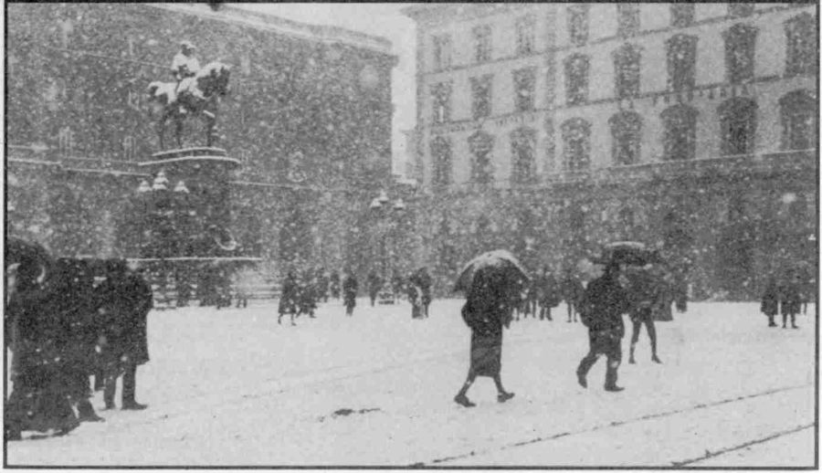
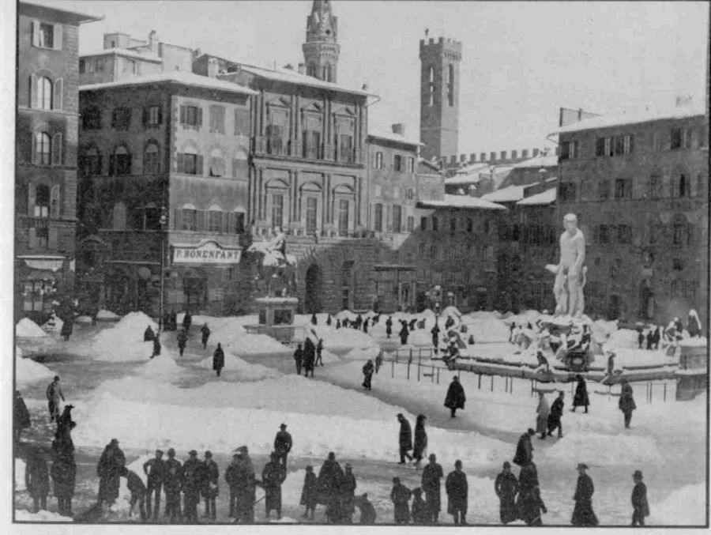
Nel 1908 si segnala solo del nevischio, ma già sul Monte Morello le nevicate furono di ben altra portata. L'anno successivo due nevicate avvennero a gennaio e a febbraio.
Il 2 febbraio 1915 La Nazione scrive: «La neve ha arrecato ieri letizia nuova ai cittadini… i fiorentini hanno salutato con gioia la neve, assistendo con lieto animo alle battaglie giovanili sulle pubbliche piazze…»; di ben altre battaglie il giornale trattava in prima pagina e così il racconto della nevicata del giorno prima temperò le notizie di guerra provenienti dal mondo (purtroppo solo per poco tempo). La nevicata fu abbondante con circa 20 cm e nevicò anche il mese prima.
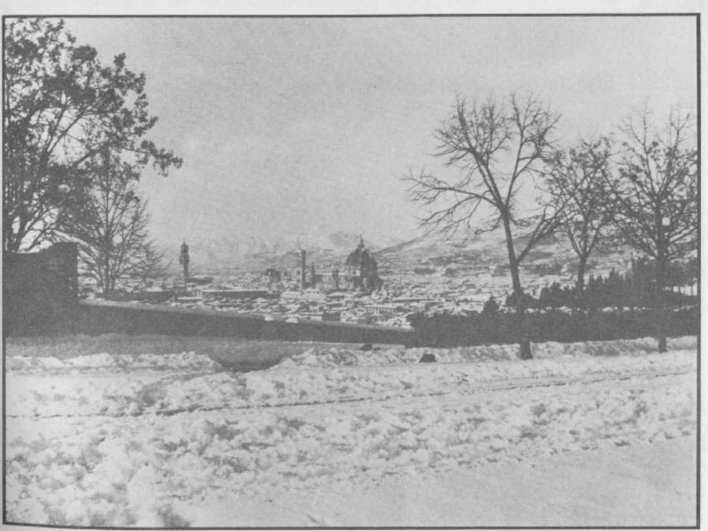
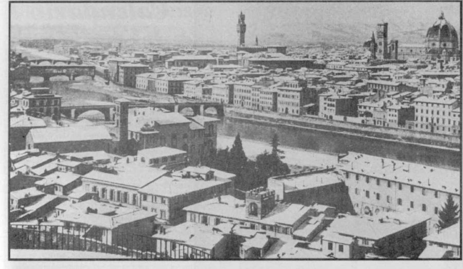
L'inverno del 1929
Ma l'inverno più gelido e nevoso che si ricordi ai giorni nostri fu quello del 1929 quando nevicò per un giorno in gennaio, per quattro giorni in febbraio, accumulando una gran quantità di neve, per un giorno in marzo, per uno in aprile e per tre in dicembre.
La prima nevicata si ebbe il 17 gennaio e fu abbondante. Il giorno dopo le strade e le pozze erano gelate, dato che già alla mezzanotte il termometro segnava −5 °C. Il 19 gennaio si raggiunsero i −7 °C; ma temperature come queste non furono da record per Firenze perché negli anni passati si toccarono punte inferiori: per esempio −10,6 °C (24 gennaio 1891) e −12,9 °C (30 dicembre 1849). Comunque nei dintorni di Firenze il freddo fu più intenso ed a Ponte a Signa la temperatura arrivò a −11 °C, mentre a Borgo San Lorenzo ci furono −15 °C. Nei giorni successivi il tempo restò freddo anche se la temperatura tese a risalire piano piano. Le notizie dal resto d'Europa erano ancor più eclatanti ed in molte città si oltrepassarono di gran lunga i −20 °C.
Il freddo tornò a farsi sentire con grande intensità domenica 3 febbraio quando il termometro registrò una minima di −7 °C e una massima di appena 0,4 °C ed il vento ghiaccio di tramontana riprese a soffiare. La gente preferì chiudersi in casa e così le strade e le piazze della città rimasero deserte. In montagna aveva cominciato già a nevicare (80 cm all'Abetone), mentre notizie provenienti da est raccontavano di interi golfi gelati sul Mar Adriatico.
Il 4 febbraio il freddo continuò ad intensificarsi: a Firenze la minima restò sui −7 °C, ma già nelle campagne si registrarono −16 °C e fiumi come il Cecina e i laghi di Chiusi e Montepulciano gelarono del tutto. L'Arno era ghiacciato in parte. Dall'estero si segnalavano −37 °C in Boemia.
L'ondata di gelo proseguì: il 5 febbraio ci furono −7,5 °C a Firenze e sul Monte Morello la neve era già alta un metro.
Giorno dopo giorno ogni corso d'acqua più grosso veniva ricoperto da uno strato di ghiaccio. Il 6 febbraio toccò al lago di Massaciuccoli ed alla Sieve sulle cui rive, in località San Piero a Sieve, si toccarono i −15 °C. In Cecoslovacchia si scese a −40 °C a Budweis.
Le giornate si mantennero gelide fino a lunedì 11 febbraio quando alle 9 cominciò anche a nevicare con vento di tramontana. Nel Mugello c'era già mezzo metro di neve. Ma ancora il peggio non era passato. A Firenze continuò a nevicare fino a giovedì 14; tutti i servizi erano interrotti o precari, cominciarono a scarseggiare i generi alimentari e, ancor peggio, la legna ed il combustibile per il riscaldamento. Con temperature vicine o uguali a −9 °C l'Arno congelò completamente e la neve si alzò di parecchi centimetri. Sull'Appennino Tosco-Emiliano, dopo giorni di intense bufere di neve, sul suolo rimase uno strato di 3 metri.
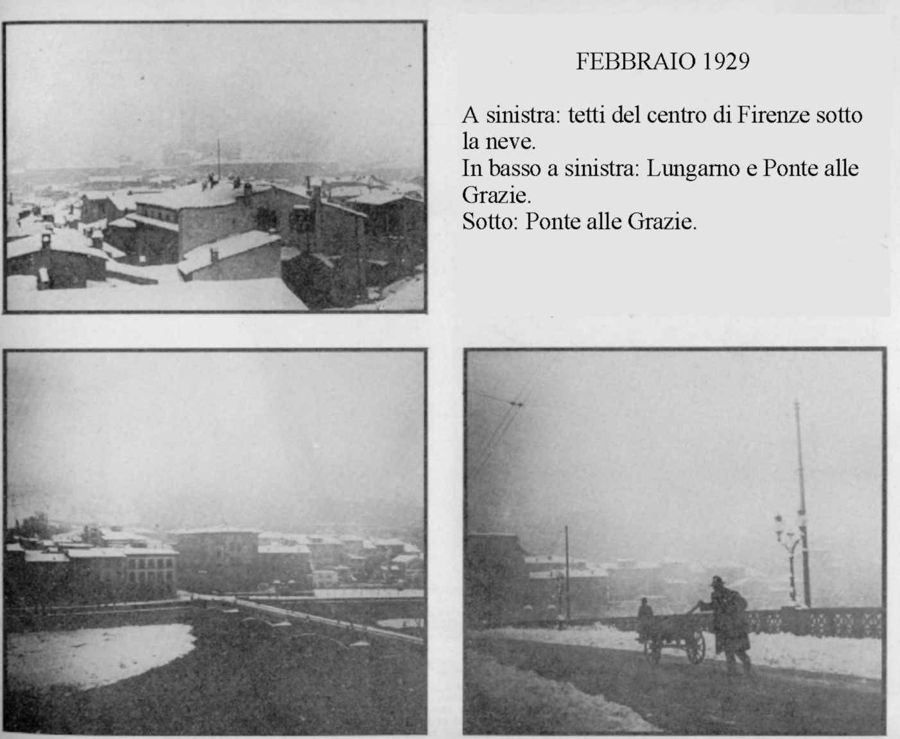
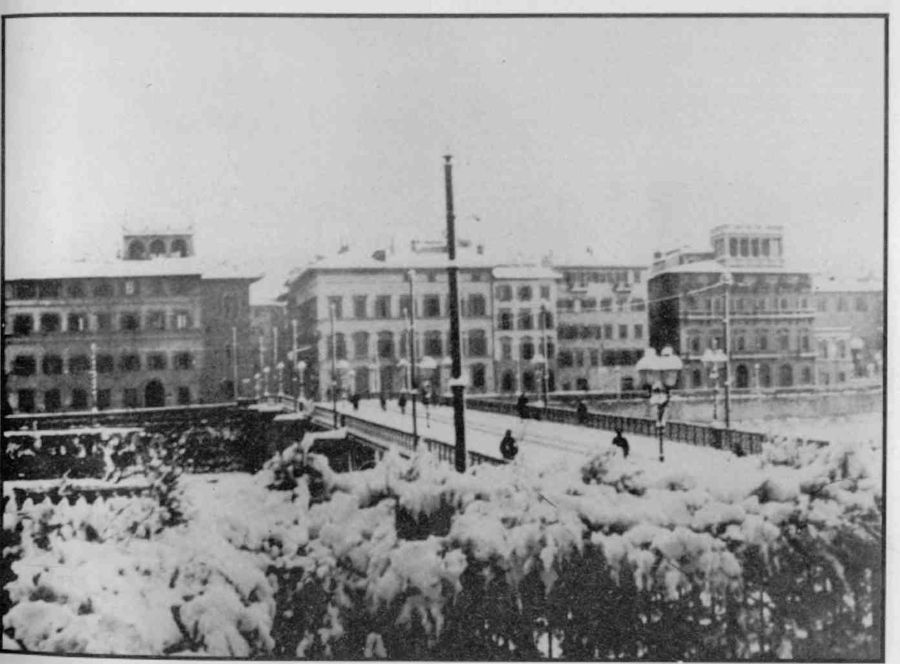
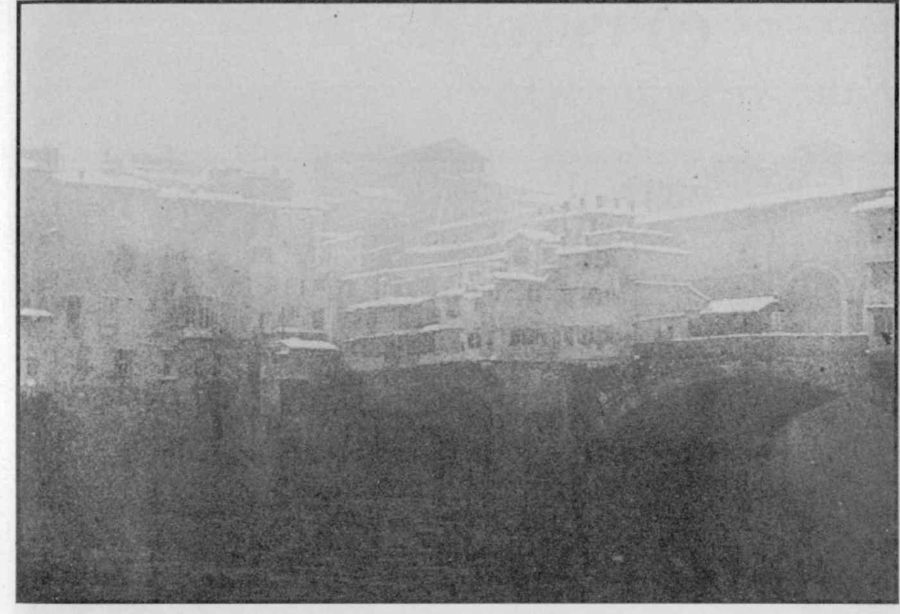
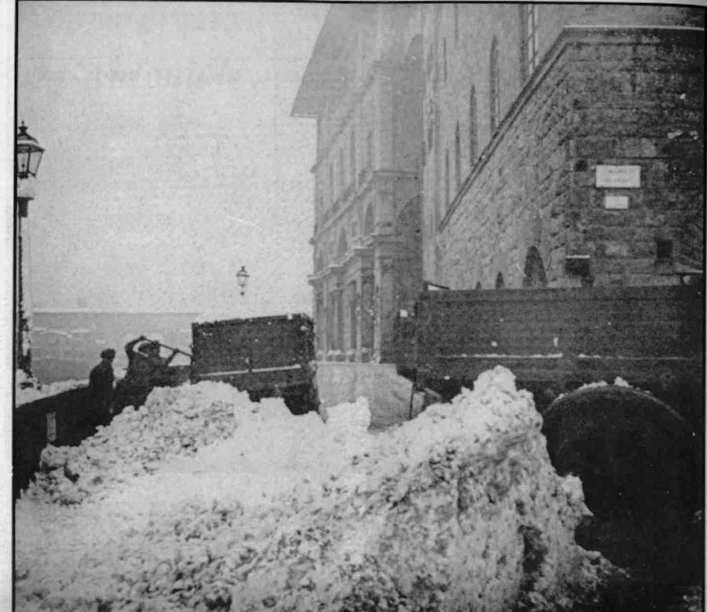
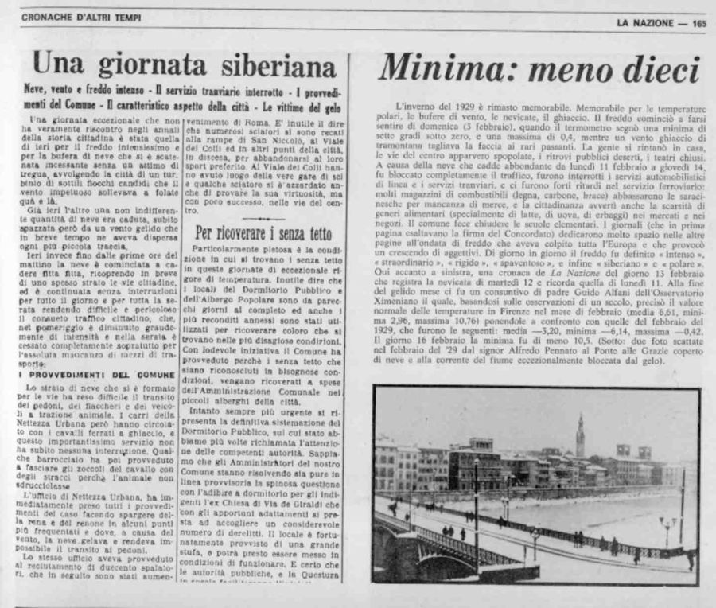
Il 16 febbraio la temperatura in città scese a −10,5 °C (a Borgo San Lorenzo −22 °C) e Padre Guido Alfani dell'Osservatorio Ximeniano di Firenze confrontò le medie di questo freddissimo periodo con quelle normali del mese di febbraio:
| Febbraio 1929 | Febbraio, normale | |
|---|---|---|
| Minima | −6,1 °C | 3,0 °C |
| Massima | −0,4 °C | 10,8 °C |
| Media | −3,2 °C | 6,6 °C |
Per far capire l'eccezionalità di quell'inverno basterebbe soltanto dire che a Varsavia si raggiunsero i −45 °C, a Vienna −32 °C (misurazioni queste che non tutti i termometri riuscirono a compiere). Il ghiaccio sul Mar Nero si estese a perdita d'occhio. In Italia ci furono paesi appenninici sommersi da circa 8 metri di neve.
Ancora oggi qualche persona più attempata, vedendo magari il termometro scendere e ricordandosi quell'inverno da lupi (che in molte parti d'Europa scesero affamati nei villaggi), esclama, esagerando un po': «Fa più freddo del '29!».
Quarant'anni di neve, 1960–1993
Per fare nevicare a Firenze non c'è certo bisogno di eventi così imponenti nella storia meteorologica come fu l'inverno del '29 o quello del '56. Anche i classici inverni possono portare nevicate più o meno consistenti. Negli ultimi 40 anni l'Osservatorio Ximeniano ha registrato i seguenti giorni con neve:
| Anno | Giorno | Neve |
|---|---|---|
| 1960 | 12 gennaio | 9,0 cm |
| 1963 | 13 gennaio | 3,5 cm |
| 17 gennaio | 1,0 cm | |
| 19 gennaio | 15,0 cm | |
| 3 febbraio | 18,0 cm | |
| 1966 | 9 gennaio | 5,0 cm |
| 15 gennaio | 1,0 cm | |
| 20 gennaio | 1,5 cm | |
| 1967 | 10 dicembre | neve, nevischio |
| 1968 | 9 gennaio | 19,0 cm |
| 1973 | 29 novembre | 5,0 cm |
| 1 dicembre | 19,0 cm | |
| 1976 | 8 marzo | 3,0 cm |
| 1979 | 4 gennaio | 4,0 cm |
| 26 febbraio | fiocchi | |
| 31 dicembre | fiocchi | |
| 1980 | 3 dicembre | 0,5 cm |
| 1982 | 26 febbraio | fiocchi |
| 1983 | 8 febbraio | fiocchi |
| 12 febbraio | fiocchi | |
| 1984 | 27 dicembre | fiocchi |
| 1985 | 5 gennaio | 3,5 cm |
| 8 gennaio | 16,0 cm | |
| 9 gennaio | 21,0 cm | |
| 13 gennaio | 8,0 cm | |
| 1986 | 11 febbraio | 2,0 cm |
| 17 febbraio | neve breve | |
| 25 febbraio | fiocchi | |
| 1987 | 11 gennaio | neve breve |
| 12 gennaio | neve breve | |
| 13 gennaio | neve breve | |
| 16 marzo | 12,0 cm | |
| 1991 | 4 febbraio | fiocchi |
| 6 febbraio | 3,0 cm | |
| 7 febbraio | 5,0 cm | |
| 12 febbraio | fiocchi | |
| 1992 | 22 gennaio | nevischio |
| 1993 | 21 febbraio | nevischio |
In evidenza le nevicate di almeno 15 cm. Altre situazioni nevose non hanno fatto rimanere la neve al suolo.
Il gennaio 1985, −23 °C
Come non soffermarci sull'ultimo grande inverno che si ricordi a Firenze? Quel gennaio del 1985 fece registrare temperature record soprattutto per Firenze che arrivò a −23 °C.
Il grande freddo di quel periodo cominciò da una situazione dell'anno precedente, per la quale forti correnti orientali interessarono la nostra penisola portando freddo e neve, ma questa solo sull'Appennino e sul versante adriatico. Infatti le masse d'aria provenienti da est sono prive di umidità e quella poca che riescono a catturare dal Mar Adriatico è sufficiente solo per qualche nevicata sul versante sopravvento. Affinché la neve possa giungere anche sul versante tirrenico è necessario l'intervento di aria artica, più instabile ed umida di quella continentale o siberiana, ma soprattutto è fondamentale la formazione di un centro di bassa pressione sul Tirreno in modo da «succhiare» l'aria settentrionale e meridionale ed innescare un processo in grado di far scavalcare le Alpi e gli Appennini anche ad aria fredda, altrimenti impossibilitata a passare per la sua elevata densità.
L'eccezionale freddo di quei giorni fu dovuto anche ad una caratteristica dell'aria artica: quella di essere più fredda in quota, cosicché, una volta oltrepassate le Alpi ed essersi fermata da noi, si è potuta riversare nei bassi strati congelando tutta l'Italia.
In un'intervista di quel periodo il Colonnello Edmondo Bernacca spiegò che:
Tutto è stato provocato da una particolare posizione delle alte e delle basse pressioni. Verso la fine dell'anno avevamo una bassa sull'Europa Centrale ed un'alta sull'Atlantico. In questo corridoio si è infilata l'aria proveniente dalle regioni artiche. Questa corrente fredda aveva una caratteristica: la grande velocità. Se fosse giunta fino a noi lentamente, avrebbe perduto cammin facendo buona parte della sua intensità, si sarebbe mitigata. Invece ci è piombata addosso velocissima, mantenendo quasi le stesse caratteristiche del luogo d'origine.
Col. Edmondo Bernacca · 1985
Il giorno di Capodanno fu bello con cielo sereno o poco nuvoloso e con temperature non basse. L'ondata di freddo, però, si stava avvicinando. Ecco le osservazioni di quei giorni storici:
| Gen 1985 | Osservazioni | T min | T max |
|---|---|---|---|
| 1 | Sereno o poco nuvoloso con foschia | 0°C | 8°C |
| 2 | Nuvoloso | −2°C | 6°C |
| 3 | Sereno o poco nuvoloso con foschia | −7°C | 8°C |
| 4 | Sereno, poi coperto con neve | −8°C | 7°C |
| 5 | Coperto con neve, poi variabile | −3°C | −1°C |
| 6 | Poco nuvoloso con vento sostenuto | −5°C | −2°C |
| 7 | Sereno | −8°C | 0°C |
| 8 | Coperto con molta neve e vento sostenuto | −10°C | −2°C |
| 9 | Coperto con neve, poi variabile | −5°C | −1°C |
| 10 | Sereno o poco nuvoloso | −15°C | 0°C |
| 11 | Sereno con foschia | −22°C | 0°C |
| 12 | Sereno con foschia, poi variabile | −23°C | 0°C |
| 13 | Coperto con neve | −13°C | 2°C |
| 14 | Coperto con pioggia intensa, poi miglioramento con nebbia | 1°C | 4°C |
| 15 | Coperto con pioggia | 1°C | 7°C |
Dalle osservazioni si capisce che un fronte freddo passa l'1 ed il 2 gennaio senza effetti di rilievo se non quello di dare inizio alla diminuzione delle temperature minime. La sera del 4 gennaio vede l'arrivo della prima neve che preannuncia l'intensa perturbazione proveniente da nord e che continuerà per tutta la notte ed il giorno seguente con temperature bassissime. Il 9 gennaio la perturbazione fa cadere le ultime abbondanti nevicate in città, poi è la volta del gelo che con una notevole progressione raggiunge valori di temperatura eccezionali: prima −15 °C, poi −22 °C ed infine il mitico −23 °C a Firenze Peretola. In città l'Osservatorio Ximeniano registra −11 °C. Il freddo tende ad attenuarsi (−13 °C) il 13 quando arrivano correnti sciroccali richiamate da una nuova depressione al largo della Corsica. Nuova neve torna a cadere, ma la risalita della temperatura non si arresta e la neve diventa pioggia che tristemente mette fine all'ondata di freddo di quell'inverno memorabile.
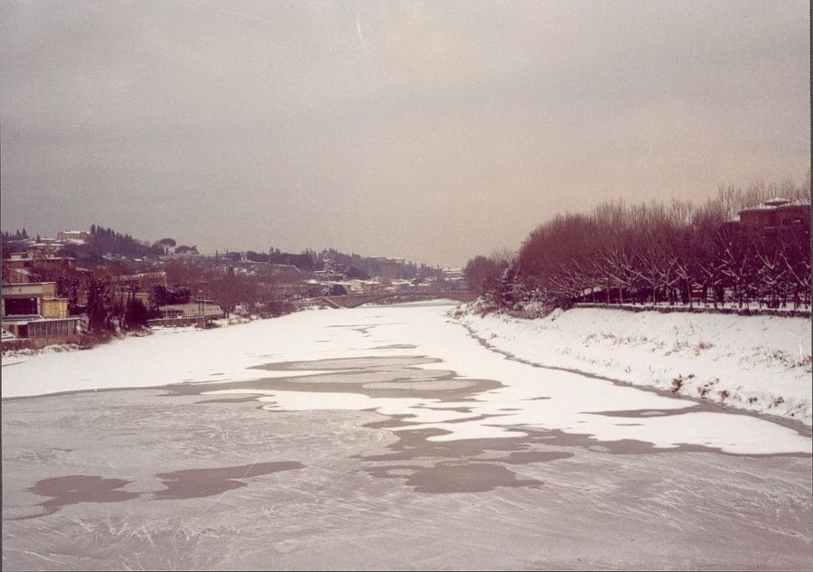
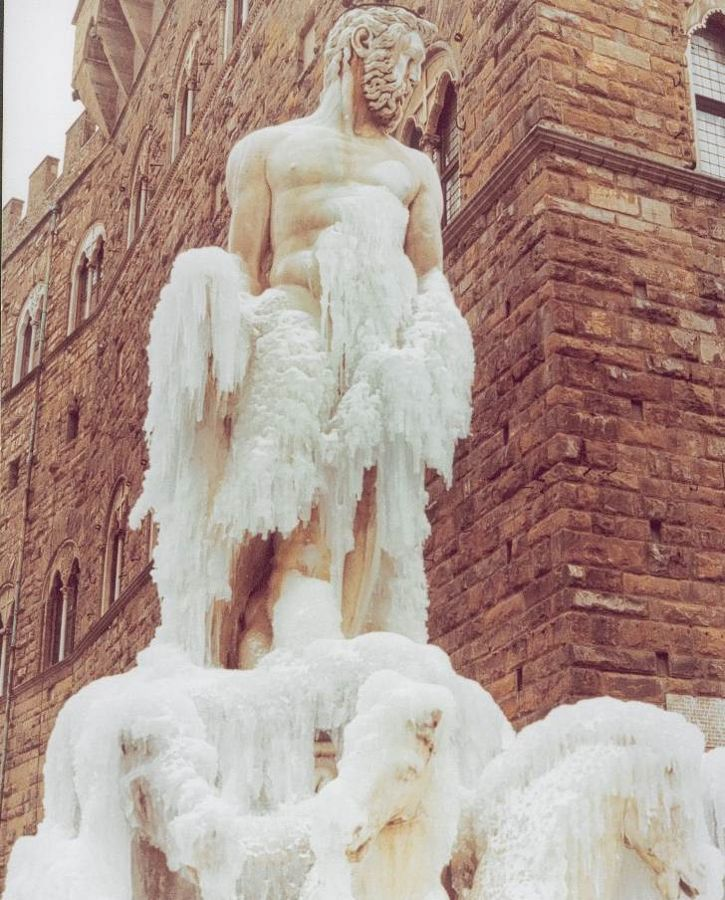
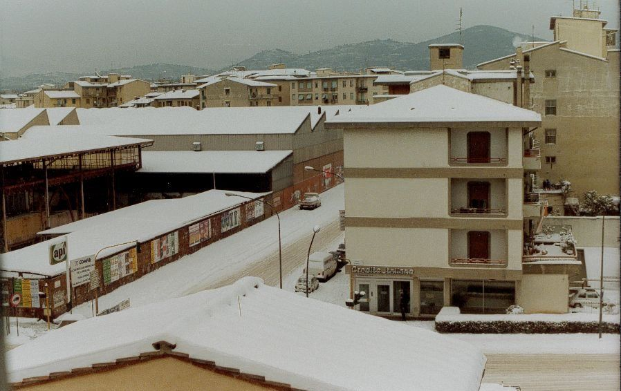
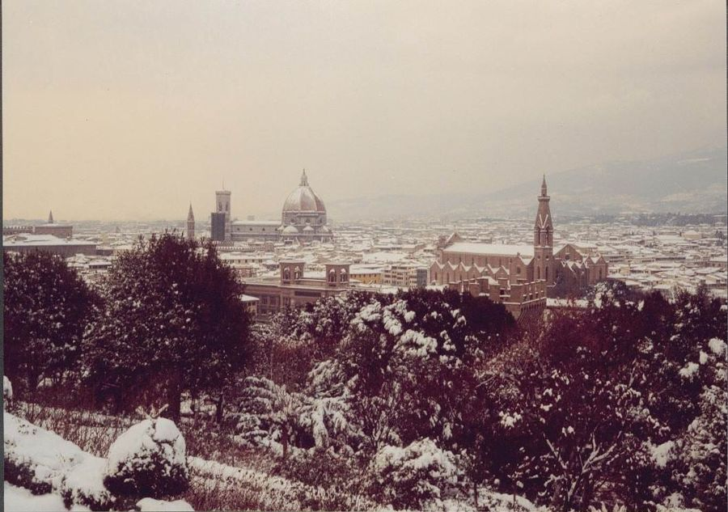
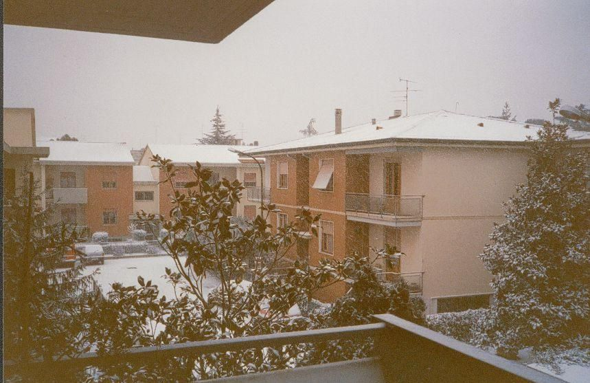
Quando nevica a Firenze?
A questo punto, dato che da molti anni a Firenze non si vede una nevicata seria, una domanda è giusto porla: quando si potranno avere condizioni ideali per la neve?
Il fattore che dà maggiore sicurezza per una nevicata è il cuscino di aria fredda che si forma dopo periodi di tempo (spesso bello) governati da una circolazione più o meno intensa di aria proveniente da Est, Nord-Est o Nord. L'aria fredda tenderà a stagnare nei bassi strati ed, in alcuni casi, a raffreddarsi ulteriormente in modo che, all'arrivo delle perturbazioni, l'aria calda, che di solito le precede, scorra sopra quella fredda e provochi nevicate; nevicate che con il fronte freddo sono ancora più sicure. Ciò avvenne il 29 dicembre 1996, dopo che il Buran, vento gelido siberiano, aveva fatto abbassare notevolmente la temperatura. Nella notte di quel giorno una nevicata fine fine imbiancò, o meglio «spolverò» la città ed il fenomeno si ripresentò il 31 sebbene con neve tonda, pioggia gelata e pioggia mista a neve, prima che i venti di scirocco facessero salire la colonnina di mercurio.
Infatti le varianti sono infinite perché spesso dipende dall'intensità delle correnti meridionali che possono far salire la temperatura anche al suolo, come abbiamo visto nell'85 e come è successo ultimamente il 9 febbraio 1999, quando l'aria fredda, arrivata dopo una perturbazione atlantica è bastata a portare la temperatura al suolo intorno allo 0 °C e così il fronte caldo della successiva perturbazione ha dato nevicate piuttosto abbondanti nella provincia di Prato e dintorni, tanto inattese quanto temporanee a causa dell'intensificazione dei venti da Sud che portarono presto la temperatura a 13 °C e i circa 10 cm di neve allo scioglimento rapido per la pioggia ed il «caldo». A Firenze, invece, non era nemmeno nevicato perché l'isola di calore della città aveva sciolto la neve già mentre cadeva. Questo è anche un altro punto dolente per Firenze, perché, quand'anche la neve attacchi dappertutto, in città spesso si scioglie inesorabilmente.
A volte, però, avviene anche l'inverso: cioè dalla pioggia si passa alla neve. Questo succede quando una intensa perturbazione forma un vortice sul Golfo Ligure o sul Tirreno Settentrionale ed, a seguito del fronte freddo, riversa aria fredda dalle quote superiori a quelle inferiori proprio mediante le abbondanti precipitazioni: situazioni di questo genere si sono avute il 13 gennaio 1999 ed il 21 febbraio 1996, quando sui tetti e sulle auto della città si depositò 1 cm di neve di breve durata.
Insomma prevedere la neve a Firenze è una delle cose più difficili per un meteorologo, anche perché le perturbazioni, con le loro nuvole, possono arrivare nel mezzo della giornata quando la temperatura è già salita sopra lo zero (mentre a Firenze comincia quasi sempre a nevicare di notte) o possono provocare venti di tramontana che per «effetto föhn» riscaldano l'aria invece di raffreddarla.
Perciò il modo più sicuro (per molti forse anche il più meraviglioso) per sapere quando nevicherà è alzarsi la mattina e, aprendo la finestra, vedere lo spettacolare tappeto bianco che si estende su tutto e che si alza fiocco dopo fiocco.